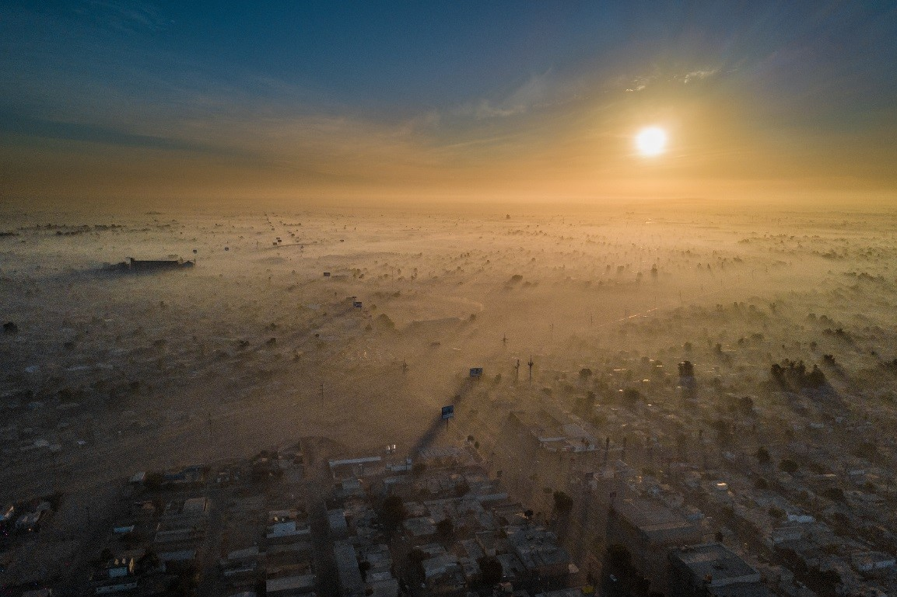
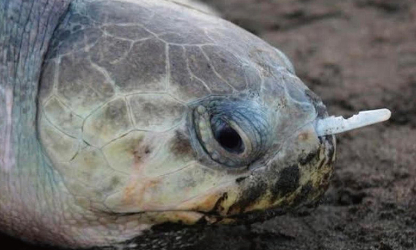
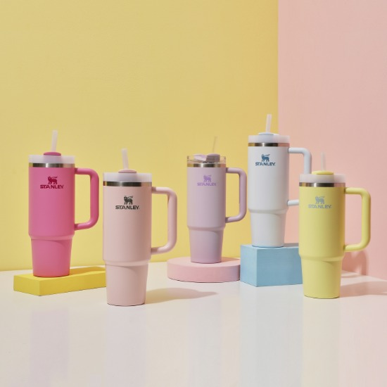
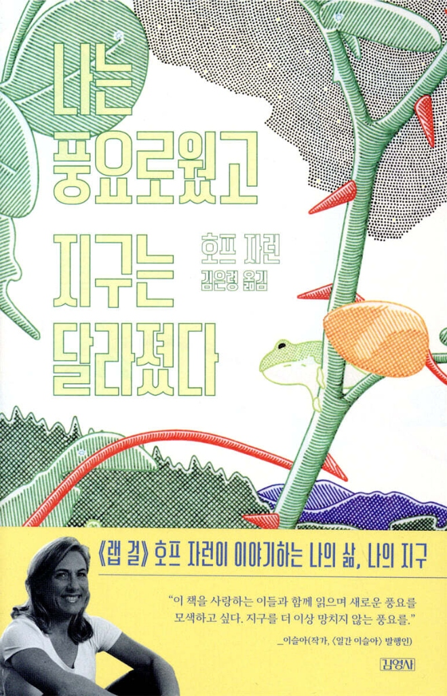
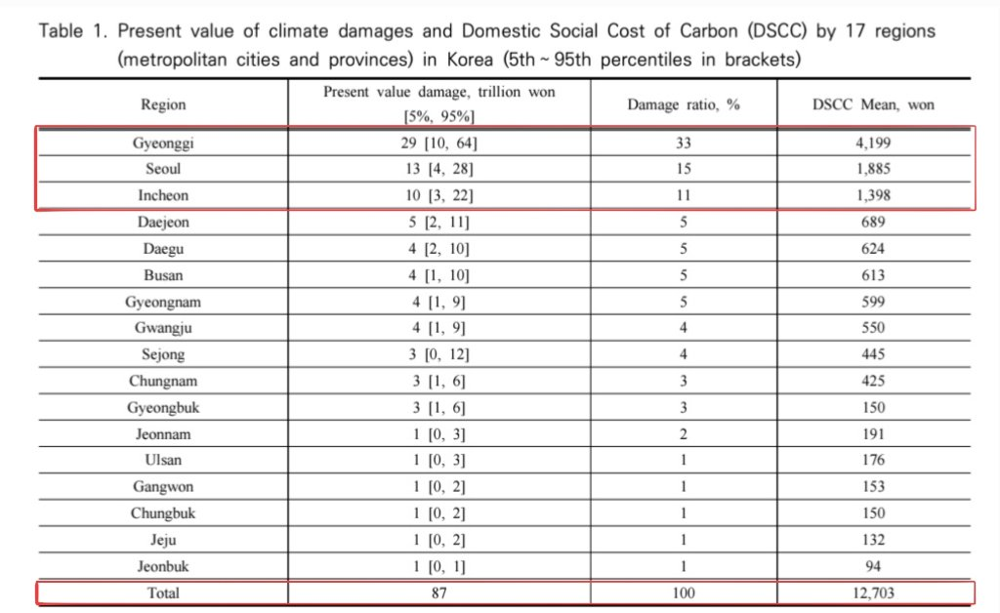
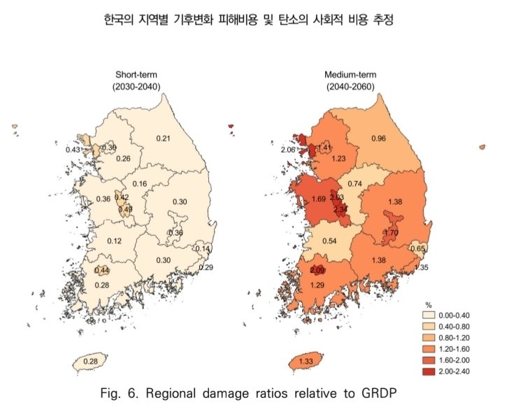

나는 풍요로웠고
지구는 달라졌다
호프 자런 (Hope Jahren) · 4부 ‘지구’



“방금 보신 사진들을 보며
어떤 게 떠오르나요?”
맞습니다. 오늘 우리가 함께 이야기해 볼 주제인
‘기후 변화와
환경’에 관련된 이미지들이었습니다.

나는 풍요로웠고,
지구는 달라졌다
호프 자런 지음 · 김은령 옮김 | 4부 ‘지구’ 편
“물질에 대한 집착은 자연에 대항하는 방향으로 열정을 불러온다.”
- 막달라 마리아 복음 (150년경, 4부 서두 인용문)
지난 반세기 동안 인류가 이룩한 눈부신 ‘물질적 풍요’의 이면에, 우리가 딛고 선 지구가 어떤 대가를 치르고 있는지를 십수 년간 축적된 과학적 데이터로 차분하고도 묵직하게 풀어낸 논픽션입니다.
인구, 농업, 에너지 사용량의 폭발적 증가 패턴을 분석하여 인류의 과도한 소비가 대기·빙하·해양·생태계를 어떻게 바꾸었는지 명확히 증명합니다.
막연한 두려움이나 허무주의에 빠져 포기하는 대신, 삶의 방식을 바꾸어 에너지를 덜 쓰고 자원을 아끼는 ‘소비의 해독’을 실천적 대안으로 제시합니다.
호프 자런 Hope Jahren
직업: 지구생물학자, 식물학자
현재 노르웨이 오슬로 대학교 교수
호프 자런 주요 이력
변해버린 대기와 따뜻해진 날씨
14장. 변해버린 대기
인류가 화석연료를 캐서 태워온 지난 50년 동안, 우리는 대기 중으로 무려 3조 톤의 여분의 이산화탄소를 쏟아냈습니다. 땅속에 묻혀 있던 탄소가 한꺼번에 대기로 배출된 것입니다.
저자의 1999년 식물 생육장 실험(1시간 만에 30℃ 돌파)과 유니스 푸트·존 틴들의 연구처럼, 이산화탄소 분자는 열을 빼앗아 흡수하는 독특한 구조를 가지고 있어 지구의 대기 환경을 완전히 바꾸어 놓았습니다.
15장. 따뜻해진 날씨
태양열과 기압 차로 발생하는 바람과 날씨에 이산화탄소가 열을 가두며, 폭풍·폭우·가뭄·살인적 추위가 극단화되는 ‘글로벌 위어딩(Global Weirding)’이 발생하고 있습니다.
지난 100년간 기온은 화씨 1.5도 이상 상승했습니다. 유엔 협약, 교토의정서, 파리협정(2도 이내 제한)을 맺었음에도 배출량은 줄지 않았으며, 모든 인류가 미국식 풍요를 누릴 경우 배출량이 4배로 폭증할 위기입니다.
녹아내리는 빙하와 높아지는 수위
16장. 녹아내리는 빙하
지구 전체 물 중 담수는 단 세 스푼이며 그중 두 스푼은 얼음입니다. 1970년대 이후 빙하가 녹아내려 로키산맥의 빙하는 저자 출생 이후 절반으로 감소했고 글레이셔 국립공원의 빙하도 소멸 위기에 처했습니다.
캐나다 연못 하키와 네덜란드 스케이트 마라톤이 중단되었고, 과거 동계올림픽 개최지의 절반 가까이가 야외 경기를 열 수 없게 되었습니다. 북극해 해빙기가 10월까지 길어지며 바다 얼음이 얇아져 북극곰의 터전이 붕괴되고 있습니다.
17장. 높아지는 수위
1880년대 이후 해수면이 17cm 이상 상승했으며, 그 상승의 절반 이상이 1969년 이후에 가속화되었습니다. 빙하 융해와 수온 상승에 따른 바닷물 열팽창 때문입니다.
토양과 지하수에 염분이 침투하여 식수를 망치고, 배출량의 1%도 안 되는 방글라데시가 국토 20%를 잃을 위기에 처하는 기후 불평등이 심화됩니다. 또한 흡수된 CO₂로 바다가 산성화되어 산호초와 조개류 외피가 파괴되고 있습니다.
가혹한 작별 인사와 또 다른 페이지
18장. 가혹한 작별 인사
도시 팽창과 유럽인의 식민화 이후 남·북미 열대우림의 88%, 산호초 90%, 초원의 95%가 파괴되었고 외래 침입종이 토착종을 몰아냈습니다. 극도의 고온은 박쥐 군락을 파괴하고, 모래 온도 상승으로 푸른바다거북의 알은 거의 암컷으로만 부화하는 위기에 놓였습니다.
현재 전 세계 멸종률은 화석 속 자연적인 배경 소멸률보다 1,000배나 높습니다. 이 추세라면 2050년까지 생물종의 25%가 사라지며, 이는 지질시대의 5대 대멸종에 준하는 파국입니다.
19장. 또 다른 페이지
탄소 포집·저장(CCS), 암석 풍화, 나무 심기, 차광막·에어로졸 같은 기술적 대안들은 더 많은 에너지를 소모하거나 가뭄·기후 교란 등 위험과 한계가 뚜렷합니다. 숲을 늘리는 것도 농지 부족 딜레마를 낳습니다.
유일하고 지속 가능한 해법은 에너지를 덜 쓰는 생활 방식인 ‘소비의 해독’입니다. 선진국과 미국이 항공·자동차 이용을 줄여야 합니다. 게으른 허무주의를 경계하고 서로에게 친절하며 아직 쓰여지지 않은 새로운 세기의 페이지를 채워가야 합니다.
한국의 지역별 기후 피해비용 & 탄소의 사회적 비용
2030~2060년 강수량 증가에 따른 17개 시·도별 경제적 피해액과 탄소 1톤당 피해비용(DSCC)

한국은 기온 자체보다 '연 총강수량의 증가'가 지역 1인당 GRDP 성장률의 1~4%를 깎아먹는 핵심 요인임. 2030~2060년 전국 총 피해비용은 누적 87조 원(최악의 시나리오 시 최대 200조 원)으로 추정됨.
인구·자산이 밀집된 경기도 29조 원(33%), 서울 13조 원(15%), 인천 10조 원(11%)으로 수도권 세 곳에서 전체의 59% 피해 발생. 특히 경기도는 중기(2040~2060)에 연평균 13조 원(최대 38조 원) 피해 예상.
이산화탄소 1톤 배출 시 발생하는 장기 경제 피해액이 경기도는 4,199원인 반면, 전라북도는 94원에 불과하여 지역 간 최대 45배의 극심한 격차가 발생함.
한반도 지역 경제(GRDP) 대비 기후 취약성 지도
단기(2030~2040) 대비 중기(2040~2060) 피해 비중 4배 이상 급증 및 취약 시·도 분석

지도에서 볼 수 있듯, 단기(2030~2040) 연평균 0.1~0.4% 수준이던 GRDP 대비 피해 비중이 중기(2040~2060)에는 전국 평균 4배 이상 급격히 짙은 주황~붉은색으로 확산되며 경제적 타격이 급증함.
절대적 피해 금액은 수도권이 크지만, 해당 지역의 경제 규모(GRDP) 대비 실질적 취약도로 환산하면 비수도권 대도시 및 자치시의 타격이 가장 심각함:
공포 소구와 기후변화 ‘파멸적 소통(Doom Communication)’의 한계
극단적 종말론적 경고는 과연 대중의 기후 행동을 이끌어내는가? (Janna de Graaf et al., 2024)
영국과 네덜란드의 일반 대중을 대상으로, 기후 변화의 결과를 보여주는 메시지와 영상의 ‘위협 수준(고위협 vs 저위협)’을 조작하여 2차례의 엄밀한 실험을 진행함.
기후 변화 완화를 위한 실천 및 정책 참여 의지
기후 변화 회의주의, 죄책감 부정, 문제 회피 태도
기후 변화에 대해 매우 위협적이고 파멸적인(Doom) 메시지를 노출하더라도, 덜 위협적인 메시지를 전달했을 때와 비교해 대중의 긍정적 행동(적응)이나 부정적 태도(부적응) 모두에 통계적으로 유의미한 차이가 나타나지 않음.
경고의 수위를 극단적으로 높인다고 해서 대중이 환경 보호에 더 적극적으로 나서지도, 반대로 더 심하게 부정하지도 않음.
대중은 이미 일상에서 기후 위기 관련 파멸적(Doom) 메시지에 장기간 과도하게 노출되어, 새로운 종말론적 경고에도 심리적 무감각 상태에 도달함.
금연 같은 개인 건강 위협과 달리, 거대한 지구적 재앙 앞에서는 “내 작은 실천이 거대 재앙을 막을 수 있을까?”라는 무력감과 효능감 저하가 발생함.
현실이 된 기후 재난: 무너지는 빙하와 눈 없는 겨울
히말라야·안데스 빙하 붕괴 홍수 참사와 동계올림픽 존립 위기를 알리는 최신 보도
「"네팔 대홍수 남일 아냐"…남미 안데스 빙하도 붕괴 공포」
• 히말라야 빙하 붕괴 참사: 네팔 초대형 대홍수로 수천 명의 사상자와 실종자가 발생하고 국가 인프라가 궤멸적 타격을 입음. 참사의 직접 원인이 지진이 아닌 ‘기후변화로 인한 빙하 붕괴’로 밝혀짐.
• 남미 안데스로 번진 공포: 페루, 칠레, 아르헨티나 등 안데스산맥 국가들에서도 빙하가 녹아내려 언제 터질지 모르는 '빙하호 붕괴(자연 댐 결괴)' 공포 확산.
• 과학자들의 경고: 온난화로 전 세계 고산 지대 빙하가 얇아지고 불안정해져, 네팔과 같은 빙하 붕괴형 돌발 홍수 재난이 다른 산악 국가에서도 언제든 반복될 수 있음.
「눈 없는 겨울… 위기의 동계올림픽」
• 2026 밀라노·코르티나담페초 비상: 지난 40여 년간 기온 급상승으로 설원의 눈이 사라져, 설상 종목 정상화를 위해 약 240만㎥의 막대한 인공설을 투입하기로 결정. 현지에서는 “결국 눈과의 싸움”이라 토로.
• 알프스의 회색화: 기후학자 루카 메르칼리, “50년 전 토리노에서 알프스를 보면 10월부터 6월까지 흰 눈으로 덮였으나, 지금은 회색인 날이 더 많다” 진단.
• 동계올림픽 존립 위기 (IOC 연구): 캐나다 워털루대·인스브루크대 분석 결과, 2050년대 동계올림픽 개최 가능 도시는 단 52곳에 불과, 2080년대에는 30곳까지 감소 전망.
“전 지구적 기후 위기 극복을 위해, 과거 화석연료로 부를 축적한 선진국이 개발도상국보다 훨씬 더 무거운 경제적·도의적 책임을 져야 하는가?”
“전 세계 이산화탄소 배출량의 1퍼센트도 배출하지 않은 국가가 가장 비싼 대가를 치르며 삶의 터전을 잃는 것은 매우 부당하므로, 근본적인 원인을 제공하며 부를 쌓은 쪽이 그에 상응하는 책임을 지는 것이 국제 사회의 정의에 부합하기 때문이다.”
“유엔 기후변화 협약이나 파리협정의 본래 목적 역시 특정 국가의 일방적인 희생이나 배상이 아니라, 전 세계 국가들의 동의와 협력을 얻어 인류 전체의 에너지 사용에 관한 광범위한 변화를 함께 이끌어내는 데 있기 때문이다.”
“기후 위기 해결을 위해 대중에게 닥쳐올 파국적 재앙과 공포를 강하고 자극적으로 경고하는 방식은 효과적인가?”
“전 세계 모든 사람이 현재 미국인처럼 에너지를 소비할 경우 이산화탄소 배출량이 무려 네 배가 될 수 있는 대격변의 상황이므로, 화석연료 중독에 빠진 인류의 안일한 태도를 산산조각 내기 위해서는 충격적인 경고 요법이 필수적이기 때문이다.”
“저자가 본문에서 거듭 강조했듯 두려움은 문제를 외면하게 만들고, 정보는 문제에 관심을 갖게 하므로, 에너지 사용에 대한 인류의 집단적 이해를 근본적으로 바꾸려면 두려움보다는 논리적인 설득과 교육이 훨씬 더 지속 가능하고 효과적이기 때문이다.”